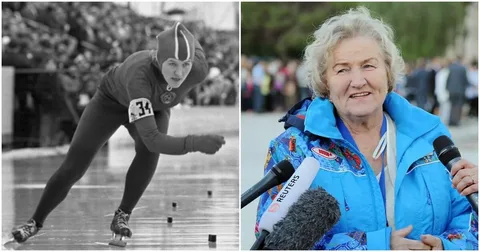

Интересные факты о Лидии Скобликовой
Лидия Скобликова
- 1:
- Лидия Скобликова родилась 8 марта 1939 года в Златоусте, кроме неё в семье было ещё четверо детей – три сестры и брат.
- 2:
- Будущая чемпионка двух Олимпиад в юности серьёзно занималась лыжами и лёгкой атлетикой, первым тренером был Борис Мишин, который давал уроки и шахматному чемпиону Анатолию Карпову.
- 3:
- Скобликова закончила факультет анатомии, физиологии и физического воспитания Челябинского педагогического института. Именно там она познакомилась с будущим мужем, легкоатлетом Александром Полозковым. Лидия Павловна вспоминала, что постоянно пропадавшего на сборах спортсмена «прикрепили» к способной студентке, чтобы подтянуть немецкий, и однажды парень спросил у своей юной наставницы, как на этом языке будет «Я тебя люблю».
- 4:
- Свои первые олимпийские медали из Скво-Вэлли в 1960 году Лидия Скобликова привезла ещё будучи студенткой, тогда же её ждал успех на дистанциях 500 и 3000 метров на чемпионате мира в Швеции. Зимнюю Олимпиаду-64 в Инсбруке иногда называют «Играми Скобликовой» - 25-летняя спортсменка победила на всех четырех дистанциях, причём на 500, 1000 и 1500 метрах установила рекорды.
- 5:
- Олимпиада-68 в Гренобле стала последней в карьере Скобликовой, на этих соревнованиях она не вошла в тройку лидеров. Лидия Павловна оставила большой спорт и посвятила себя воспитанию сына Георгия, который также добился немалых успехов в конькобежном спорте и некоторое время был старшим тренером сборной России по конькобежному спорту.
- 6:
- Лидия Скобликова является кандидатом исторических наук, профессором, в разное время была директором детско-юношеской спортшколы и возглавляла федерацию конькобежного спорта.
- 7:
- В декабре 2013 года именитая спортсменка участвовала в эстафете олимпийского огня в Челябинске, а на открытии самих Игр в Сочи вместе с другими знаменитостями несла олимпийский флаг.
- 8:
- Имя Лидии Скобликовой носит большой ледовый дворец в Челябинске и спортивная школа при нём, проводится также ежегодный турнир среди юниоров на приз Скобликовой. Изображение прославленной конькобежки вытеснено на памятных монетах Банка России и отпечатано на конвертах.
- 9:
- В конце 2016 года Свердловская киностудия объявила о планах снять документальный фильм о Лидии Скобликовой. Сценаристы решили воссоздать некоторые эпизоды из её жизни, а часть материала отсняли с участием самой спортсменки в Челябинске – в стенах педагогического университета и ледового дворца, названного её именем.